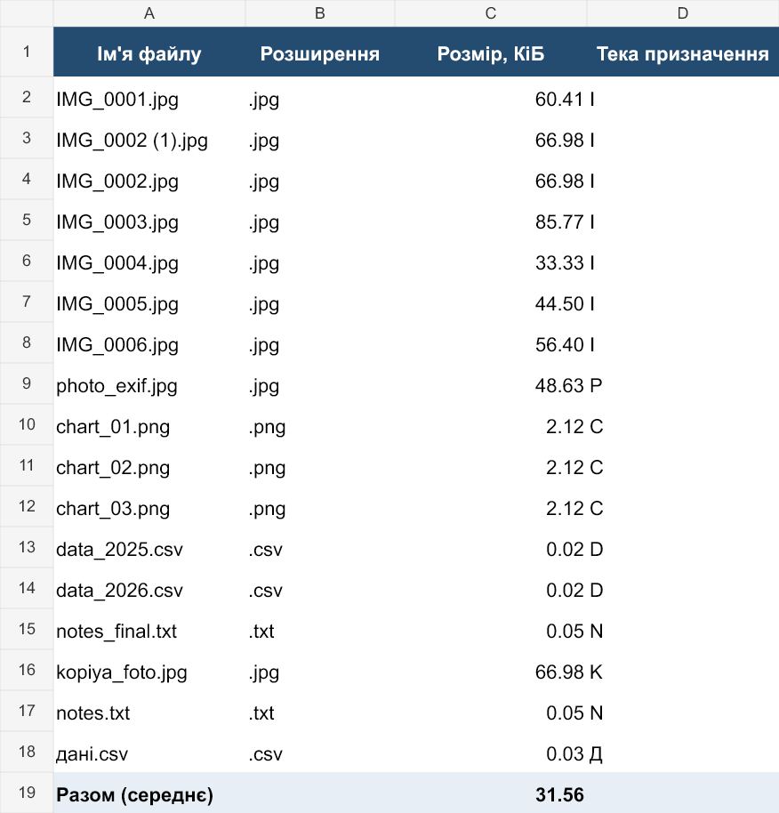
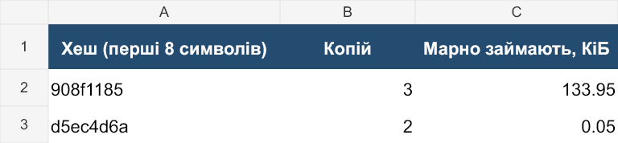

Лабораторна робота №4
Практичне 05: автоматизація файлів і зображень
Борисенко Нікіта · К-41 · PY-C2Q / PR05-C5U
Виконано завдання «Практичне 05» з PDF у теці lab-04. Мета: створити безпечну консольну програму, довести ідемпотентність, обробити зображення, дослідити EXIF і сформувати книгу Excel.
1. Картка та середовище
{
"variant": "PY-C2Q",
"labVariant": "PR05-C5U",
"email": "n.borysenko@istu.edu.ua",
"student": "N Borysenko",
"course": "python",
"lab": "python-lab-05",
"base": {
"slice": {
"field": "year",
"ge": 1930,
"le": 1969
},
"filter": {
"field": "duration_min",
"lt": 85
},
"sort": {
"field": "director",
"direction": "asc",
"tiebreak": {
"field": "title",
"direction": "asc"
}
},
"metric": {
"code": "mean_duration",
"rounding": 0.1
}
},
"lab05": {
"layout": {
"rule": "за першою літерою імені файлу",
"kind": "letter",
"folders": {
"pattern": "велика перша літера імені",
"digits": "0-9",
"fallback": "other — якщо перший символ не літера й не цифра"
},
"extensions": [
".jpg",
".png",
".csv",
".txt"
],
"note": "правило задає лише теку призначення — імена файлів не змінюються"
},
"thumbs": {
"box": [
200,
200
],
"format": "JPEG",
"quality": 90,
"note": "вписати у квадрат зі збереженням пропорцій; окрема тека призначення"
},
"watermark": {
"text": "© PY-C2Q · 2026",
"position": "по центру кадру",
"anchor": "center",
"note": "кегль — ширина кадру // 20, не менший за 12 px; альфа ≈ 140; відступ 12 px"
},
"excel": {
"sheets": [
{
"name": "Файли",
"columns": [
"Ім'я файлу",
"Розширення",
"Розмір, КіБ",
"Тека призначення"
]
},
{
"name": "Дублікати",
"columns": [
"Хеш (перші 8 символів)",
"Копій",
"Марно займають, КіБ"
]
}
],
"formula": {
"function": "AVERAGE",
"column": "Розмір, КіБ",
"text": "середній розмір файлу",
"sheet": "Файли"
},
"note": "openpyxl формул не обчислює — він записує лише їхній текст"
}
}
}Виконання локальне за погодженням. Публікацію на GitHub виконує власник; URL ще не надано, тому QR-код на неіснуюче посилання не створювався. Після публікації параметр --url створює QR-код.
{
"Python": "3.12.10",
"numpy": "2.5.3",
"Pillow": "12.2.0",
"openpyxl": "3.1.5",
"qrcode": "8.2"
}
2. Тестова тека та аудиторна частина
Тестові дані згенеровано за схемою завдання: 23 файли, 14 зображень, підтеки camera та docs. Градієнти є синтетичними навчальними зображеннями, а координати в EXIF — даними генератора. Початкові файли збережено в test_folder.
Інвентаризація з -v показала 9 JPG, 3 PNG, 3 CSV, 2 TXT, 2 MD, 2 WEBP, 1 ZIP та 1 файл без розширення. Сумарний розмір — 550,514 КиБ. Перед хешуванням файли згруповано за розміром; SHA-256 читає блоки по 1 МіБ.
Хеш пораховано для 9 файлів із 23. Знайдено 2 групи дублікатів; зайві копії займають 133.997 КиБ.
| SHA-256 (8 символів) | Файли | Копій | Марно, КиБ |
|---|
| 908f1185 | camera/IMG_0002 (1).jpg, camera/IMG_0002.jpg, kopiya_foto.jpg | 3 | 133.951 |
| d5ec4d6a | docs/notes_final.txt, notes.txt | 2 | 0.046 |
Чотири додатково хешовані файли мають однакові розміри, але різний вміст; сам розмір не доводить дублювання.
3. Розкладання файлів
Для .jpg, .png, .csv та .txt обирається тека за першою літерою імені у верхньому регістрі. Цифри потрапляють у 0-9, решта символів — у other. Імена файлів не змінюються. Обрано копіювання зі збереженням оригіналів. Наявний файл із тим самим хешем пропускається; однойменний файл з іншим вмістом фіксується як конфлікт і не перезаписується.
У цьому наборі відібрано 17 файлів; 6 файлів з іншими розширеннями пропущено з записом у журнал. Гілки 0-9 та other перевірено окремими тимчасовими прикладами.
| Ім'я файлу | Розширення | Розмір, КіБ | Тека призначення |
|---|
| IMG_0001.jpg | .jpg | 60.411 | I |
| IMG_0002 (1).jpg | .jpg | 66.976 | I |
| IMG_0002.jpg | .jpg | 66.976 | I |
| IMG_0003.jpg | .jpg | 85.774 | I |
| IMG_0004.jpg | .jpg | 33.327 | I |
| IMG_0005.jpg | .jpg | 44.496 | I |
| IMG_0006.jpg | .jpg | 56.401 | I |
| photo_exif.jpg | .jpg | 48.634 | P |
| chart_01.png | .png | 2.117 | C |
| chart_02.png | .png | 2.116 | C |
| chart_03.png | .png | 2.116 | C |
| data_2025.csv | .csv | 0.024 | D |
| data_2026.csv | .csv | 0.024 | D |
| notes_final.txt | .txt | 0.046 | N |
| kopiya_foto.jpg | .jpg | 66.976 | K |
| notes.txt | .txt | 0.046 | N |
| дані.csv | .csv | 0.032 | Д |
Команди виконання
python main.py --init-demo
python main.py --dry-run -v
python main.py -v
python main.py -v
--init-demo потрібний тільки для нової порожньої теки; комплектний test_folder уже створено. --dry-run записує журнал, але не змінює вхідні файли, не створює копій, мініатюр або Excel.
Довідка --help
usage: main.py [-h] [-o OUTPUT] [--results RESULTS] [--ext EXT [EXT ...]]
[--log LOG] [-v] [--dry-run] [--scan-only] [--init-demo]
[--url URL]
[source]
Розкладання файлів та обробка зображень: PY-C2Q / PR05-C5U
positional arguments:
source Вхідна тека
options:
-h, --help show this help message and exit
-o OUTPUT, --output OUTPUT
Тека копій поза source
--results RESULTS Тека звітів та мініатюр
--ext EXT [EXT ...] Розширення через пробіл
--log LOG Файл журналу UTF-8
-v, --verbose Показувати пропущені розширення
--dry-run Лише план; не копіювати й не обробляти файли
--scan-only Лише інвентаризація й дублікати
--init-demo Створити тестову теку; не замінювати наявні файли
--url URL Посилання на опубліковану роботу для QR-коду
4. Доказ ідемпотентності
| Запуск | Скопійовано | Пропущено | Конфліктів | Помилок |
|---|
| 1 | 17 | 0 | 0 | 0 |
| 2 | 0 | 17 | 0 | 0 |
Другий запуск безпечний завдяки перевірці бажаного кінцевого стану: файл із тим самим іменем і SHA-256 уже існує, тому повторне копіювання не виконується.
Єдиний журнал: dry-run та обидва справжні запуски
2026-11-09 21:28:04 | INFO | старт: source=D:\програмування алгоритив\lab-04\work-04\test_folder, out=D:\програмування алгоритив\lab-04\work-04\results\sorted, dry_run=True
2026-11-09 21:28:04 | DEBUG | пропущено розширення: backup.zip
2026-11-09 21:28:04 | DEBUG | пропущено розширення: docs\plan.md
2026-11-09 21:28:04 | DEBUG | пропущено розширення: docs\README.md
2026-11-09 21:28:04 | DEBUG | пропущено розширення: docs\scan_01.webp
2026-11-09 21:28:04 | DEBUG | пропущено розширення: docs\scan_02.webp
2026-11-09 21:28:04 | DEBUG | пропущено розширення: LICENSE
2026-11-09 21:28:04 | INFO | файлів: 23; розмір: 550.514 КіБ; за розширеннями: {'.zip': 1, '.jpg': 9, '.png': 3, '.csv': 3, '.txt': 2, '.md': 2, '.webp': 2, '(без розширення)': 1}
2026-11-09 21:28:04 | INFO | дублікати 908f1185: camera/IMG_0002 (1).jpg, camera/IMG_0002.jpg, kopiya_foto.jpg
2026-11-09 21:28:04 | INFO | дублікати d5ec4d6a: docs/notes_final.txt, notes.txt
2026-11-09 21:28:04 | INFO | хеш пораховано для 9 файлів із 23
2026-11-09 21:28:04 | INFO | [dry-run] IMG_0001.jpg -> I
2026-11-09 21:28:04 | INFO | [dry-run] IMG_0002 (1).jpg -> I
2026-11-09 21:28:04 | INFO | [dry-run] IMG_0002.jpg -> I
2026-11-09 21:28:04 | INFO | [dry-run] IMG_0003.jpg -> I
2026-11-09 21:28:04 | INFO | [dry-run] IMG_0004.jpg -> I
2026-11-09 21:28:04 | INFO | [dry-run] IMG_0005.jpg -> I
2026-11-09 21:28:04 | INFO | [dry-run] IMG_0006.jpg -> I
2026-11-09 21:28:04 | INFO | [dry-run] photo_exif.jpg -> P
2026-11-09 21:28:04 | INFO | [dry-run] chart_01.png -> C
2026-11-09 21:28:04 | INFO | [dry-run] chart_02.png -> C
2026-11-09 21:28:04 | INFO | [dry-run] chart_03.png -> C
2026-11-09 21:28:04 | INFO | [dry-run] data_2025.csv -> D
2026-11-09 21:28:04 | INFO | [dry-run] data_2026.csv -> D
2026-11-09 21:28:04 | INFO | [dry-run] notes_final.txt -> N
2026-11-09 21:28:04 | INFO | [dry-run] kopiya_foto.jpg -> K
2026-11-09 21:28:04 | INFO | [dry-run] notes.txt -> N
2026-11-09 21:28:04 | INFO | [dry-run] дані.csv -> Д
2026-11-09 21:28:04 | INFO | підсумок розкладання: {'copied': 0, 'skipped': 0, 'planned': 17, 'conflicts': 0, 'failed': 0}
2026-11-09 21:28:14 | INFO | старт: source=D:\програмування алгоритив\lab-04\work-04\test_folder, out=D:\програмування алгоритив\lab-04\work-04\results\sorted, dry_run=False
2026-11-09 21:28:14 | DEBUG | пропущено розширення: backup.zip
2026-11-09 21:28:14 | DEBUG | пропущено розширення: docs\plan.md
2026-11-09 21:28:14 | DEBUG | пропущено розширення: docs\README.md
2026-11-09 21:28:14 | DEBUG | пропущено розширення: docs\scan_01.webp
2026-11-09 21:28:14 | DEBUG | пропущено розширення: docs\scan_02.webp
2026-11-09 21:28:14 | DEBUG | пропущено розширення: LICENSE
2026-11-09 21:28:14 | INFO | файлів: 23; розмір: 550.514 КіБ; за розширеннями: {'.zip': 1, '.jpg': 9, '.png': 3, '.csv': 3, '.txt': 2, '.md': 2, '.webp': 2, '(без розширення)': 1}
2026-11-09 21:28:14 | INFO | дублікати 908f1185: camera/IMG_0002 (1).jpg, camera/IMG_0002.jpg, kopiya_foto.jpg
2026-11-09 21:28:14 | INFO | дублікати d5ec4d6a: docs/notes_final.txt, notes.txt
2026-11-09 21:28:14 | INFO | хеш пораховано для 9 файлів із 23
2026-11-09 21:28:14 | INFO | скопійовано: IMG_0001.jpg -> I
2026-11-09 21:28:14 | INFO | скопійовано: IMG_0002 (1).jpg -> I
2026-11-09 21:28:14 | INFO | скопійовано: IMG_0002.jpg -> I
2026-11-09 21:28:14 | INFO | скопійовано: IMG_0003.jpg -> I
2026-11-09 21:28:14 | INFO | скопійовано: IMG_0004.jpg -> I
2026-11-09 21:28:14 | INFO | скопійовано: IMG_0005.jpg -> I
2026-11-09 21:28:14 | INFO | скопійовано: IMG_0006.jpg -> I
2026-11-09 21:28:14 | INFO | скопійовано: photo_exif.jpg -> P
2026-11-09 21:28:14 | INFO | скопійовано: chart_01.png -> C
2026-11-09 21:28:14 | INFO | скопійовано: chart_02.png -> C
2026-11-09 21:28:14 | INFO | скопійовано: chart_03.png -> C
2026-11-09 21:28:14 | INFO | скопійовано: data_2025.csv -> D
2026-11-09 21:28:14 | INFO | скопійовано: data_2026.csv -> D
2026-11-09 21:28:14 | INFO | скопійовано: notes_final.txt -> N
2026-11-09 21:28:14 | INFO | скопійовано: kopiya_foto.jpg -> K
2026-11-09 21:28:14 | INFO | скопійовано: notes.txt -> N
2026-11-09 21:28:14 | INFO | скопійовано: дані.csv -> Д
2026-11-09 21:28:14 | INFO | підсумок розкладання: {'copied': 17, 'skipped': 0, 'planned': 0, 'conflicts': 0, 'failed': 0}
2026-11-09 21:28:14 | DEBUG | пропущено розширення: backup.zip
2026-11-09 21:28:14 | DEBUG | пропущено розширення: data_2025.csv
2026-11-09 21:28:14 | DEBUG | пропущено розширення: data_2026.csv
2026-11-09 21:28:14 | DEBUG | пропущено розширення: docs\notes_final.txt
2026-11-09 21:28:14 | DEBUG | пропущено розширення: docs\plan.md
2026-11-09 21:28:14 | DEBUG | пропущено розширення: docs\README.md
2026-11-09 21:28:14 | DEBUG | пропущено розширення: LICENSE
2026-11-09 21:28:14 | DEBUG | пропущено розширення: notes.txt
2026-11-09 21:28:14 | DEBUG | пропущено розширення: дані.csv
2026-11-09 21:28:15 | INFO | мініатюри: {'done': 14, 'skipped': 0, 'failed': 0}
2026-11-09 21:28:15 | INFO | Excel: =AVERAGE(C2:C18); середній розмір: 31.558421 КіБ
2026-11-09 21:28:15 | INFO | завершено
2026-11-09 21:28:15 | INFO | старт: source=D:\програмування алгоритив\lab-04\work-04\test_folder, out=D:\програмування алгоритив\lab-04\work-04\results\sorted, dry_run=False
2026-11-09 21:28:15 | DEBUG | пропущено розширення: backup.zip
2026-11-09 21:28:15 | DEBUG | пропущено розширення: docs\plan.md
2026-11-09 21:28:15 | DEBUG | пропущено розширення: docs\README.md
2026-11-09 21:28:15 | DEBUG | пропущено розширення: docs\scan_01.webp
2026-11-09 21:28:15 | DEBUG | пропущено розширення: docs\scan_02.webp
2026-11-09 21:28:15 | DEBUG | пропущено розширення: LICENSE
2026-11-09 21:28:15 | INFO | файлів: 23; розмір: 550.514 КіБ; за розширеннями: {'.zip': 1, '.jpg': 9, '.png': 3, '.csv': 3, '.txt': 2, '.md': 2, '.webp': 2, '(без розширення)': 1}
2026-11-09 21:28:15 | INFO | дублікати 908f1185: camera/IMG_0002 (1).jpg, camera/IMG_0002.jpg, kopiya_foto.jpg
2026-11-09 21:28:15 | INFO | дублікати d5ec4d6a: docs/notes_final.txt, notes.txt
2026-11-09 21:28:15 | INFO | хеш пораховано для 9 файлів із 23
2026-11-09 21:28:15 | INFO | вже є той самий вміст: D:\програмування алгоритив\lab-04\work-04\results\sorted\I\IMG_0001.jpg
2026-11-09 21:28:15 | INFO | вже є той самий вміст: D:\програмування алгоритив\lab-04\work-04\results\sorted\I\IMG_0002 (1).jpg
2026-11-09 21:28:15 | INFO | вже є той самий вміст: D:\програмування алгоритив\lab-04\work-04\results\sorted\I\IMG_0002.jpg
2026-11-09 21:28:15 | INFO | вже є той самий вміст: D:\програмування алгоритив\lab-04\work-04\results\sorted\I\IMG_0003.jpg
2026-11-09 21:28:15 | INFO | вже є той самий вміст: D:\програмування алгоритив\lab-04\work-04\results\sorted\I\IMG_0004.jpg
2026-11-09 21:28:15 | INFO | вже є той самий вміст: D:\програмування алгоритив\lab-04\work-04\results\sorted\I\IMG_0005.jpg
2026-11-09 21:28:15 | INFO | вже є той самий вміст: D:\програмування алгоритив\lab-04\work-04\results\sorted\I\IMG_0006.jpg
2026-11-09 21:28:15 | INFO | вже є той самий вміст: D:\програмування алгоритив\lab-04\work-04\results\sorted\P\photo_exif.jpg
2026-11-09 21:28:15 | INFO | вже є той самий вміст: D:\програмування алгоритив\lab-04\work-04\results\sorted\C\chart_01.png
2026-11-09 21:28:15 | INFO | вже є той самий вміст: D:\програмування алгоритив\lab-04\work-04\results\sorted\C\chart_02.png
2026-11-09 21:28:15 | INFO | вже є той самий вміст: D:\програмування алгоритив\lab-04\work-04\results\sorted\C\chart_03.png
2026-11-09 21:28:15 | INFO | вже є той самий вміст: D:\програмування алгоритив\lab-04\work-04\results\sorted\D\data_2025.csv
2026-11-09 21:28:15 | INFO | вже є той самий вміст: D:\програмування алгоритив\lab-04\work-04\results\sorted\D\data_2026.csv
2026-11-09 21:28:15 | INFO | вже є той самий вміст: D:\програмування алгоритив\lab-04\work-04\results\sorted\N\notes_final.txt
2026-11-09 21:28:15 | INFO | вже є той самий вміст: D:\програмування алгоритив\lab-04\work-04\results\sorted\K\kopiya_foto.jpg
2026-11-09 21:28:15 | INFO | вже є той самий вміст: D:\програмування алгоритив\lab-04\work-04\results\sorted\N\notes.txt
2026-11-09 21:28:15 | INFO | вже є той самий вміст: D:\програмування алгоритив\lab-04\work-04\results\sorted\Д\дані.csv
2026-11-09 21:28:15 | INFO | підсумок розкладання: {'copied': 0, 'skipped': 17, 'planned': 0, 'conflicts': 0, 'failed': 0}
2026-11-09 21:28:15 | DEBUG | пропущено розширення: backup.zip
2026-11-09 21:28:15 | DEBUG | пропущено розширення: data_2025.csv
2026-11-09 21:28:15 | DEBUG | пропущено розширення: data_2026.csv
2026-11-09 21:28:15 | DEBUG | пропущено розширення: docs\notes_final.txt
2026-11-09 21:28:15 | DEBUG | пропущено розширення: docs\plan.md
2026-11-09 21:28:15 | DEBUG | пропущено розширення: docs\README.md
2026-11-09 21:28:15 | DEBUG | пропущено розширення: LICENSE
2026-11-09 21:28:15 | DEBUG | пропущено розширення: notes.txt
2026-11-09 21:28:15 | DEBUG | пропущено розширення: дані.csv
2026-11-09 21:28:15 | INFO | мініатюра вже є: camera\IMG_0001.jpg
2026-11-09 21:28:15 | INFO | мініатюра вже є: camera\IMG_0002 (1).jpg
2026-11-09 21:28:15 | INFO | мініатюра вже є: camera\IMG_0002.jpg
2026-11-09 21:28:15 | INFO | мініатюра вже є: camera\IMG_0003.jpg
2026-11-09 21:28:15 | INFO | мініатюра вже є: camera\IMG_0004.jpg
2026-11-09 21:28:15 | INFO | мініатюра вже є: camera\IMG_0005.jpg
2026-11-09 21:28:15 | INFO | мініатюра вже є: camera\IMG_0006.jpg
2026-11-09 21:28:15 | INFO | мініатюра вже є: camera\photo_exif.jpg
2026-11-09 21:28:15 | INFO | мініатюра вже є: chart_01.png
2026-11-09 21:28:15 | INFO | мініатюра вже є: chart_02.png
2026-11-09 21:28:15 | INFO | мініатюра вже є: chart_03.png
2026-11-09 21:28:15 | INFO | мініатюра вже є: docs\scan_01.webp
2026-11-09 21:28:15 | INFO | мініатюра вже є: docs\scan_02.webp
2026-11-09 21:28:16 | INFO | мініатюра вже є: kopiya_foto.jpg
2026-11-09 21:28:16 | INFO | мініатюри: {'done': 0, 'skipped': 14, 'failed': 0}
2026-11-09 21:28:16 | INFO | Excel: =AVERAGE(C2:C18); середній розмір: 31.558421 КіБ
2026-11-09 21:28:16 | INFO | завершено
Окремі знімки чисел: перший запуск та другий запуск. Журнал використовує RotatingFileHandler, UTF-8, ліміт 1 МБ та три резервні файли.
5. Пакетна обробка зображень
| Запуск | Оброблено | Пропущено | Помилок |
|---|
| 1 | 14 | 0 | 0 |
| 2 | 0 | 14 | 0 |
Оброблено всі 14 зображень, включно з WEBP: обмеження розширень картки стосується розкладання файлів, а не джерела мініатюр. ImageOps.exif_transpose виправляє орієнтацію; thumbnail вписує кадр у 200×200 зі збереженням пропорцій. Формат JPEG, quality=90, перетворення RGB перед записом.
Водяний знак «© PY-C2Q · 2026» розташовано по центру за textbbox, на окремому RGBA-шарі з альфою 140. Кегль max(12, ширина // 20). Для центрального положення відступ від країв не застосовується. Підтеки та початкове розширення входять у шлях мініатюри, тому однойменні джерела не затираються.
Мініатюра 200×125, водяний знак у центрі.| Джерело | До, px | Після, px | Розмір JPEG, байт |
|---|
| camera/IMG_0001.jpg | 1600 × 1000 | 200 × 125 | 3540 |
| camera/IMG_0002 (1).jpg | 1200 × 1600 | 150 × 200 | 3836 |
| camera/IMG_0002.jpg | 1200 × 1600 | 150 × 200 | 3836 |
| camera/IMG_0003.jpg | 2000 × 1200 | 200 × 120 | 3514 |
| camera/IMG_0004.jpg | 900 × 900 | 200 × 200 | 4437 |
| camera/IMG_0005.jpg | 1400 × 800 | 200 × 114 | 3516 |
| camera/IMG_0006.jpg | 1000 × 1500 | 133 × 200 | 3601 |
| camera/photo_exif.jpg | 1200 × 900 | 200 × 150 | 3987 |
| chart_01.png | 800 × 500 | 200 × 125 | 3545 |
| chart_02.png | 800 × 500 | 200 × 125 | 3529 |
| chart_03.png | 800 × 500 | 200 × 125 | 3514 |
| docs/scan_01.webp | 1100 × 700 | 200 × 127 | 3752 |
| docs/scan_02.webp | 1100 × 700 | 200 × 127 | 3749 |
| kopiya_foto.jpg | 1200 × 1600 | 150 × 200 | 3836 |
6. EXIF до й після очищення
Досліджено тестовий camera/photo_exif.jpg. Це зображення генератора, не особиста фотографія.
{
"GPSInfo": "142",
"Make": "ISTU",
"Model": "Colab Phone X",
"Software": "pr05-generator",
"Orientation": "1",
"DateTime": "2026:03:14 09:15:00"
}Геодані
{
"GPSLatitudeRef": "N",
"GPSLatitude": "(50.0, 27.0, 12.0)",
"GPSLongitudeRef": "E",
"GPSLongitude": "(30.0, 31.0, 24.0)"
}Геокоординати є: 50,4533333° N, 30,5233333° E. Показати координати генератора на карті.
Перерахунок: градуси + хвилини / 60 + секунди / 3600; для S і W знак від'ємний. Спочатку застосовано exif_transpose, потім нове зображення створено виключно з пікселів.
| len(getexif()) до | len(getexif()) після |
|---|
| 6 | 0 |
Фото без EXIF. Перевірку виконано повторним відкриттям збереженого JPEG.
7. Excel-звіт
Завантажити книгу Excel. Аркуш «Файли» містить 17 відібраних джерел; «Дублікати» — дві групи з повної тестової теки. Заголовки виділено кольором і жирним шрифтом, ширини розраховано за вмістом, перший рядок закріплено A2.
У C19 записано формулу =AVERAGE(C2:C18). Незалежний результат Python: 31.558421415 КиБ, відображення — 31,56 КиБ. Обчислення формули під час перевірки книги збіглося з Python. openpyxl записує формулу без кешованого значення: у файлі вона обчислюється після відкриття в Excel або LibreOffice.

Візуалізація збереженого аркуша «Файли» з обчисленим підсумковим рядком C19.
Візуалізація другого аркуша. Зайве місце = (кількість копій − 1) × розмір одного файлу.
8. Повний скрипт
main.py містить увесь код завдання. Імпорт не запускає дії та не додає обробники журналу.
"""Автоматизація файлів: PY-C2Q / PR05-C5U (тека лабораторної №4)."""
from __future__ import annotations
import argparse
import hashlib
import json
import logging
import os
import shutil
import sys
import zipfile
from collections import Counter, defaultdict
from datetime import datetime
from logging.handlers import RotatingFileHandler
from pathlib import Path
import numpy as np
from PIL import ExifTags, Image, ImageDraw, ImageFont, ImageOps, UnidentifiedImageError
from openpyxl import Workbook
from openpyxl.styles import Alignment, Font, PatternFill
from openpyxl.utils import get_column_letter
BASE = Path(__file__).resolve().parent
EXTENSIONS = {".jpg", ".png", ".csv", ".txt"}
IMAGE_EXTENSIONS = {".jpg", ".jpeg", ".png", ".webp"}
log = logging.getLogger("pr05")
def setup_logging(path: Path, verbose: bool) -> None:
path.parent.mkdir(parents=True, exist_ok=True)
log.setLevel(logging.DEBUG)
for handler in log.handlers[:]:
handler.close(); log.removeHandler(handler)
log.propagate = False
formatter = logging.Formatter("%(asctime)s | %(levelname)s | %(message)s", "%Y-%m-%d %H:%M:%S")
file_handler = RotatingFileHandler(path, maxBytes=1_000_000, backupCount=3, encoding="utf-8")
stream_handler = logging.StreamHandler(sys.stdout)
stream_handler.setLevel(logging.DEBUG if verbose else logging.INFO)
for handler in (file_handler, stream_handler):
handler.setFormatter(formatter); log.addHandler(handler)
def scan(source: Path, extensions: set[str] | None = None) -> list[Path]:
files = []
for path in sorted(source.rglob("*")):
# Символічні посилання не повинні виводити обхід за межі вхідної теки.
if path.is_symlink() or not path.is_file() or not path.resolve().is_relative_to(source.resolve()):
continue
if extensions is not None and path.suffix.lower() not in extensions:
log.debug("пропущено розширення: %s", path.relative_to(source))
continue
files.append(path)
return files
def file_hash(path: Path) -> str:
digest = hashlib.sha256()
with path.open("rb") as stream:
while block := stream.read(1 << 20):
digest.update(block)
return digest.hexdigest()
def find_duplicates(files: list[Path]) -> tuple[list[tuple[str, list[Path]]], int]:
by_size = defaultdict(list)
for path in files:
by_size[path.stat().st_size].append(path)
by_hash = defaultdict(list)
hashed = 0
# Однаковий вміст має однаковий розмір; унікальні розміри не хешуємо.
for group in by_size.values():
if len(group) < 2:
continue
for path in group:
by_hash[file_hash(path)].append(path); hashed += 1
return [(digest, paths) for digest, paths in sorted(by_hash.items()) if len(paths) > 1], hashed
def destination(path: Path, output: Path) -> Path:
first = path.name[0]
folder = first.upper() if first.isalpha() else "0-9" if first.isdigit() else "other"
return output / folder
def validate_output(source: Path, output: Path) -> None:
if output.resolve().is_relative_to(source.resolve()):
raise ValueError("Тека результатів має бути поза вхідною текою")
def organize(files: list[Path], output: Path, dry_run: bool) -> dict:
counts = Counter(copied=0, skipped=0, planned=0, conflicts=0, failed=0)
for source in files:
target = destination(source, output) / source.name
if target.exists():
if target.is_file() and file_hash(source) == file_hash(target):
counts["skipped"] += 1
log.info("вже є той самий вміст: %s", target)
else:
# Картка забороняє змінювати імена; колізії не перезаписуємо.
counts["conflicts"] += 1
log.warning("конфлікт імені, файл збережено без змін: %s", target)
continue
if dry_run:
counts["planned"] += 1
log.info("[dry-run] %s -> %s", source.name, target.parent.name)
continue
try:
target.parent.mkdir(parents=True, exist_ok=True)
# Ексклюзивне створення захищає від перезапису навіть при колізії між перевіркою і записом.
with source.open("rb") as src, target.open("xb") as dst:
shutil.copyfileobj(src, dst, length=1 << 20)
shutil.copystat(source, target)
counts["copied"] += 1
log.info("скопійовано: %s -> %s", source.name, target.parent.name)
except OSError as exc:
counts["failed"] += 1; log.error("не вдалося скопіювати %s: %s", source, exc)
log.info("підсумок розкладання: %s", dict(counts))
return dict(counts)
def font_path() -> str:
paths = [BASE / "resources/DejaVuSans.ttf", Path("C:/Windows/Fonts/arial.ttf"), Path("/usr/share/fonts/truetype/dejavu/DejaVuSans.ttf")]
for path in paths:
if path.exists():
return str(path)
raise FileNotFoundError("Не знайдено шрифт із кирилицею")
def process_images(source: Path, output: Path) -> tuple[dict, list[dict]]:
validate_output(source, output)
counts = Counter(done=0, skipped=0, failed=0)
rows = []
for path in scan(source, IMAGE_EXTENSIONS):
# Зберігаємо підтеки й початкове розширення в імені: a.png та a.jpg не зіткнуться.
relative = path.relative_to(source)
target = output / relative.parent / (relative.name + ".jpg")
try:
with Image.open(path) as original:
image = ImageOps.exif_transpose(original).convert("RGBA")
before = image.size
image.thumbnail((200, 200), Image.Resampling.LANCZOS)
if target.exists():
counts["skipped"] += 1
log.info("мініатюра вже є: %s", relative)
else:
layer = Image.new("RGBA", image.size, (0, 0, 0, 0))
draw = ImageDraw.Draw(layer)
font = ImageFont.truetype(font_path(), max(12, image.width // 20))
text = "© PY-C2Q · 2026"
left, top, right, bottom = draw.textbbox((0, 0), text, font=font)
x = (image.width - (right-left))/2-left
y = (image.height - (bottom-top))/2-top
draw.text((x, y), text, font=font, fill=(255, 255, 255, 140))
result = Image.alpha_composite(image, layer).convert("RGB")
target.parent.mkdir(parents=True, exist_ok=True)
with target.open("xb") as stream:
result.save(stream, "JPEG", quality=90)
counts["done"] += 1
rows.append({"source": relative.as_posix(), "before": list(before), "after": list(image.size), "bytes": target.stat().st_size})
except (UnidentifiedImageError, OSError, ValueError) as exc:
counts["failed"] += 1; log.warning("помилка зображення %s: %s", relative, exc)
log.info("мініатюри: %s", dict(counts))
return dict(counts), rows
def inspect_exif(source: Path, target: Path) -> dict:
with Image.open(source) as original:
exif = original.getexif()
tags = {ExifTags.TAGS.get(key, str(key)): str(value) for key, value in exif.items()}
gps = exif.get_ifd(ExifTags.IFD.GPSInfo)
result = {"before": len(exif), "tags": tags, "gps_present": bool(gps), "gps_tags": {ExifTags.GPSTAGS.get(k, str(k)): str(v) for k, v in gps.items()}}
if gps:
def degrees(values, hemisphere):
number = float(values[0])+float(values[1])/60+float(values[2])/3600
return -number if hemisphere in ("S", "W") else number
lat, lon = degrees(gps[2], gps[1]), degrees(gps[4], gps[3])
result.update(latitude=lat, longitude=lon, map_url=f"https://www.google.com/maps?q={lat:.7f},{lon:.7f}")
# Орієнтацію виправляємо до вилучення EXIF, потім залишаємо лише пікселі.
oriented = ImageOps.exif_transpose(original).convert("RGB")
clean = Image.frombytes("RGB", oriented.size, oriented.tobytes())
target.parent.mkdir(parents=True, exist_ok=True)
clean.save(target, "JPEG", quality=90)
with Image.open(target) as clean:
result["after"] = len(clean.getexif())
return result
def write_excel(files: list[Path], groups: list[tuple[str, list[Path]]], output: Path, path: Path) -> dict:
workbook = Workbook()
sheet = workbook.active; sheet.title = "Файли"
sheet.append(["Ім'я файлу", "Розширення", "Розмір, КіБ", "Тека призначення"])
for file in files:
sheet.append([file.name, file.suffix.lower(), file.stat().st_size/1024, destination(file, output).name])
last = sheet.max_row
sheet.append(["Разом (середнє)", None, f"=AVERAGE(C2:C{last})" if files else None, None])
duplicates = workbook.create_sheet("Дублікати")
duplicates.append(["Хеш (перші 8 символів)", "Копій", "Марно займають, КіБ"])
for digest, group in groups:
duplicates.append([digest[:8], len(group), (len(group)-1)*group[0].stat().st_size/1024])
for current in workbook:
current.freeze_panes = "A2"
current.sheet_view.showGridLines = False
current.auto_filter.ref = f"A1:{get_column_letter(current.max_column)}{last if current is sheet else current.max_row}"
for cell in current[1]:
cell.font = Font(name="Arial", bold=True, color="FFFFFF", size=11)
cell.fill = PatternFill("solid", fgColor="244B70")
cell.alignment = Alignment(horizontal="center", vertical="center")
current.row_dimensions[1].height = 28
for row in current.iter_rows(min_row=2):
current.row_dimensions[row[0].row].height = 23
for cell in row:
cell.font = Font(name="Arial", size=11)
cell.alignment = Alignment(vertical="center")
row[2].number_format = "0.00"
for column in current.columns:
width = max(len(str(cell.value or "")) for cell in column)+2
current.column_dimensions[column[0].column_letter].width = max(14, width)
for cell in sheet[sheet.max_row]:
cell.font = Font(name="Arial", bold=True, size=11)
cell.fill = PatternFill("solid", fgColor="E7EEF5")
path.parent.mkdir(parents=True, exist_ok=True)
workbook.save(path)
return {"rows": len(files), "formula_cell": f"C{last+1}", "formula": sheet.cell(last+1, 3).value, "python_average_kib": sum(p.stat().st_size/1024 for p in files)/len(files) if files else None}
def build_test_folder(root: Path) -> None:
if root.exists() and any(root.iterdir()):
raise FileExistsError("Тестова тека вже непорожня; використайте новий шлях")
(root / "camera").mkdir(parents=True, exist_ok=True)
(root / "docs").mkdir(exist_ok=True)
def image(w, h, seed):
rng = np.random.default_rng(seed)
arr = np.zeros((h, w, 3), dtype=np.float32)
arr[..., 0] = np.linspace(0, 255, w, dtype=np.float32)
arr[..., 1] = np.linspace(0, 255, h, dtype=np.float32)[:, None]
arr[..., 2] = rng.integers(40, 220)
return Image.fromarray(arr.astype(np.uint8))
def touch(path, date):
stamp = datetime.strptime(date, "%Y-%m-%d").timestamp()
os.utime(path, (stamp, stamp))
sizes = [(1600,1000),(1200,1600),(2000,1200),(900,900),(1400,800),(1000,1500)]
dates = ["2025-11-03","2025-11-27","2025-12-15","2026-01-09","2026-02-02","2026-02-21"]
for i, ((w,h), date) in enumerate(zip(sizes, dates), 1):
path = root / "camera" / f"IMG_{i:04d}.jpg"
image(w,h,i).save(path, quality=88); touch(path,date)
for i,date in enumerate(["2025-12-01","2026-01-20","2026-03-05"],1):
path=root/f"chart_{i:02d}.png"; image(800,500,100+i).save(path,optimize=True); touch(path,date)
for i,date in enumerate(["2026-01-31","2026-03-11"],1):
path=root/"docs"/f"scan_{i:02d}.webp"; image(1100,700,200+i).save(path,quality=82); touch(path,date)
texts = {"notes.txt":"нотатки до практичного 05\n", "docs/README.md":"# Тестова тека\nстворено генератором ПР05\n", "docs/plan.md":"- розкласти\n- обробити\n- звіт\n", "data_2025.csv":"rik;znachennia\n2025;10\n", "data_2026.csv":"rik;znachennia\n2026;12\n", "дані.csv":"рік;значення\n2026;7\n", "LICENSE":"навчальний матеріал\n"}
for (name,text),date in zip(texts.items(),["2025-11-03","2025-12-01","2026-01-09","2026-01-20","2026-02-02","2026-02-21","2026-03-05"]):
path=root/name; path.write_text(text,encoding="utf-8"); touch(path,date)
shutil.copy2(root/"camera/IMG_0002.jpg", root/"camera/IMG_0002 (1).jpg")
shutil.copy2(root/"camera/IMG_0002.jpg", root/"kopiya_foto.jpg")
shutil.copy2(root/"notes.txt", root/"docs/notes_final.txt")
with zipfile.ZipFile(root/"backup.zip","w",zipfile.ZIP_DEFLATED) as archive:
archive.write(root/"notes.txt","notes.txt")
touch(root/"backup.zip","2026-02-02")
exif=Image.Exif()
exif[271],exif[272]="ISTU","Colab Phone X"
exif[305],exif[306],exif[274]="pr05-generator","2026:03:14 09:15:00",1
exif.get_ifd(ExifTags.IFD.GPSInfo).update({1:"N",2:(50.,27.,12.),3:"E",4:(30.,31.,24.)})
image(1200,900,7).save(root/"camera/photo_exif.jpg",quality=90,exif=exif)
touch(root/"camera/photo_exif.jpg","2026-03-14")
print(f"Створено {len(scan(root))} файли, з них {len(scan(root, IMAGE_EXTENSIONS))} зображень")
def build_parser() -> argparse.ArgumentParser:
parser=argparse.ArgumentParser(description="Розкладання файлів та обробка зображень: PY-C2Q / PR05-C5U")
parser.add_argument("source", type=Path, nargs="?", default=BASE/"test_folder", help="Вхідна тека")
parser.add_argument("-o","--output",type=Path,default=BASE/"results/sorted",help="Тека копій поза source")
parser.add_argument("--results",type=Path,default=BASE/"results",help="Тека звітів та мініатюр")
parser.add_argument("--ext",nargs="+",default=sorted(EXTENSIONS),help="Розширення через пробіл")
parser.add_argument("--log",type=Path,default=BASE/"results/tidy.log",help="Файл журналу UTF-8")
parser.add_argument("-v","--verbose",action="store_true",help="Показувати пропущені розширення")
parser.add_argument("--dry-run",action="store_true",help="Лише план; не копіювати й не обробляти файли")
parser.add_argument("--scan-only",action="store_true",help="Лише інвентаризація й дублікати")
parser.add_argument("--init-demo",action="store_true",help="Створити тестову теку; не замінювати наявні файли")
parser.add_argument("--url",help="Посилання на опубліковану роботу для QR-коду")
return parser
def main() -> None:
parser=build_parser(); args=parser.parse_args()
if args.init_demo:
build_test_folder(args.source); return
if not args.source.is_dir():
parser.error("Вхідна тека не існує")
try:
for path in [args.output, args.results, args.log.parent]:
validate_output(args.source,path)
except ValueError as exc:
parser.error(str(exc))
setup_logging(args.log,args.verbose)
log.info("старт: source=%s, out=%s, dry_run=%s",args.source,args.output,args.dry_run)
all_files=scan(args.source)
files=scan(args.source,{'.'+e.lower().lstrip('.') for e in args.ext})
groups,hashed=find_duplicates(all_files)
log.info("файлів: %s; розмір: %.3f КіБ; за розширеннями: %s",len(all_files),sum(p.stat().st_size for p in all_files)/1024,dict(Counter(p.suffix.lower() or '(без розширення)' for p in all_files)))
for digest,group in groups:
log.info("дублікати %s: %s",digest[:8],', '.join(p.relative_to(args.source).as_posix() for p in group))
log.info("хеш пораховано для %s файлів із %s",hashed,len(all_files))
if args.scan_only:
return
organized=organize(files,args.output,args.dry_run)
if args.dry_run:
return
args.results.mkdir(parents=True,exist_ok=True)
image_counts,image_rows=process_images(args.source,args.results/"thumbnails")
exif_source=args.source/"camera/photo_exif.jpg"
exif=inspect_exif(exif_source,args.results/"photo_clean.jpg") if exif_source.exists() else None
excel=write_excel(files,groups,args.output,args.results/"files.xlsx")
if args.url:
import qrcode
qrcode.make(args.url,border=4).save(args.results/"qr.png")
summary={"variant":"PY-C2Q","labVariant":"PR05-C5U","total_files":len(all_files),"selected_files":len(files),"hashed_files":hashed,"duplicates":[{"hash":d,"files":[p.relative_to(args.source).as_posix() for p in g],"wasted_kib":(len(g)-1)*g[0].stat().st_size/1024} for d,g in groups],"organize":organized,"images":image_counts,"image_rows":image_rows,"exif":exif,"excel":excel}
(args.results/"summary.json").write_text(json.dumps(summary,ensure_ascii=False,indent=2),encoding="utf-8")
log.info("Excel: %s; середній розмір: %.6f КіБ",excel["formula"],excel["python_average_kib"] or 0)
log.info("завершено")
if organized["conflicts"] or organized["failed"] or image_counts["failed"]:
raise SystemExit(1)
if __name__ == "__main__":
main()
9. Перевірки та висновки
Перевірено: повторний запуск, збіг хешів кожної копії з оригіналом, колізія імен із різним вмістом, dry-run без створення копій, відхилення теки результатів усередині source, кирилиця/цифри/other, збереження однойменних зображень із різних підтек, продовження після пошкодженого JPEG, розміри всіх 14 мініатюр, обидва аркуші та формула Excel.
Порівняння хешів забезпечило повторний запуск без нових копій: 17 скопійовано спочатку і 17 пропущено повторно. Пакетна обробка створила 14 мініатюр без помилок, а очищення EXIF прибрало всі 6 тегів, включно з геоданими. Excel узагальнив фактичні результати й показав середній розмір відібраного файлу 31,56 КиБ.
10. Використання ШІ для звіту
Для підготовки тексту та HTML-оформлення звіту використано ChatGPT (Codex). Числа взято з локальних запусків програми та перевірки створеної книги.